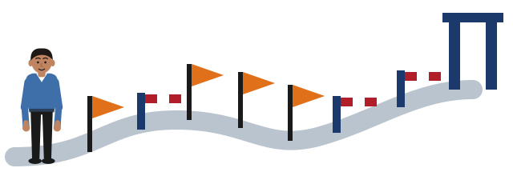

Module map
The whole term on one page: thirteen weeks, four taught sessions, three checkpoints and a final defence. The weekly plan below is the module's own schedule.

- what happens in each of the thirteen weeks
- what each checkpoint asks for
- why ethics approval comes after your full draft, not before it
How to read the map
In the picture at the top of this page, the term is a road. An orange flag marks each taught session, a small striped gate marks each checkpoint, and the large gateway at the end is the defence. You start on the left, in Week 1.
Weeks are also called P-weeks: P1 to P13 are the preparation weeks of this module. Session 4 uses this notation when you plan your project, and adds D-weeks for the delivery module that follows.
Rows for taught sessions are shaded blue. Rows for the checkpoints and the defence are shaded sand.
The thirteen weeks
| Week | Activity | Focus |
|---|---|---|
| 1 | S1 (3 hrs) | Launch plus whole-journey preview and exemplars; topic selection; research-question formation. Framing taught head-on. |
| 2 | Supervision | Research-question clinic (heaviest supervision touch); weak-to-strong iteration. |
| 3 | Checkpoint 1: Problem outline | Heavy on the research question (rubric-referenced, revision expected); rest light. The early diagnostic. |
| 4 | S2 (3 hrs) | Literature review; security venues, RFCs, NIST/NCSC/OWASP; gap identification. Framing against the known. |
| 5 | Supervision | Literature-review progress; ethics process and timeline briefed. |
| 6 | S3 (3 hrs) | Methodology, tool justification, evaluation design. Framing as testable. |
| 7 | S4 (3 hrs) | Legal and ethical analysis (CMA 1990, GDPR, disclosure, dual-use); delivery plan and risk. Framing boundaries. Ethics window opens. |
| 8 | Checkpoint 2: Proposal draft | Full draft; feedback across all five rubric criteria. |
| 9 | Supervision | Acting on draft feedback; ethics applications under review and revision. |
| 10 | Supervision | Integration; target ethics final approval. |
| 11 | Supervision | Polish: evaluation strategy, APA7 and references, structure. |
| 12 | Checkpoint 3: Final proposal (summative CW1) | Submission with completed ethics-approval evidence (Appendix A). |
| 13 | Defence + bridge | Proposal defence (presentation and viva voce; must-pass gate); cohort feedback; transition to NB6019CEM Research Project Delivery. |
All four taught sessions land in Weeks 1 to 7; Weeks 8 to 12 are supervised production. Teach the skills, then support the build.
Checkpoints and the defence
Checkpoint 1 (Week 3): Problem Outline
Submitted. A short outline centred on the research question, with the problem context and provisional aims and objectives.
Handling. Heavy on the research question, light on everything else. Feedback is rubric-referenced against Criterion 1, and a revision of the question is expected where it falls short. This is the forcing function: a vague question is caught and corrected here, before the literature review and methodology are built on it.
Support. A rubric-aligned self-check helps students see the distance between a topic statement and an evaluable question before they submit.
Checkpoint 2 (Week 8): Proposal Draft
Submitted. A full draft proposal across the four-chapter structure.
Handling. Feedback across all five rubric criteria, identifying the largest gaps to close during the production weeks. Formative and not separately graded.
Checkpoint 3 (Week 12): Final Proposal (Summative CW1)
Submitted. The assessed proposal, marked solely against the rubric, with completed ethics-approval evidence in Appendix A.
Proposal Defence (Week 13): Must-Pass Gate
Format. A presentation and viva voce in which the student defends the proposal: stating and justifying the problem and research question, explaining the chosen approach, and responding to questions.
Function. Required and must-pass, and not separately weighted. It confirms the student's authorship and understanding, and concludes the assessment of CW1. For this cohort it is also the final framing test, since a problem that was never properly framed cannot be defended out loud. Passing bridges the student into NB6019CEM Research Project Delivery, where the implementation is carried out.

- The picture
- A door that will not open until you have put your key down. You cannot leave the room still holding it.
- Why it works
- The Week 3 checkpoint works like that door. You cannot move into the literature review in Week 4 without first writing your question down and receiving feedback on it. It forces the decision early, while changing the question is still cheap.
- Where it stops working
- A forcing function forces a decision, not a perfect one. Your Week 3 question is expected to need revision. The checkpoint exists to find the weak points early, not to judge you finally.

- The picture
- A gate on a road. However good the road behind you, you go no further until the gate opens.
- Why it works
- The Week 13 defence carries no marks of its own, but you must pass it. It confirms that the proposal is yours and that you understand it, by asking you to explain and defend it out loud.
- Where it stops working
- A gate does not measure how well you drove; it only lets you through or not. Your proposal's quality is measured by the rubric in Week 12. The defence checks that the quality is truly yours.
Why ethics approval comes after the draft
Ethics approval follows your method, because the ethics reviewers need to see exactly what you will do. Your method is fixed in Session 3 (Week 6), the application window opens in Session 4 (Week 7), and final approval is targeted around Week 10. The approval evidence goes into Appendix A of the proposal you submit in Week 12.
Check yourself
Which comes first, your full proposal draft or your ethics approval?
The full draft, in Week 8. Final ethics approval is targeted around Week 10. The order matters: the reviewers judge your method, so the method must be written before they can approve it.
What does the Week 3 checkpoint look at most closely?
Your research question. Everything else in the outline is checked lightly. A vague question is caught here, before four weeks of literature review and method are built on top of it.
The Week 13 defence has no marks of its own. Why must you still pass it?
Because it confirms that the proposal is your own work and that you understand it. A proposal you cannot explain out loud cannot be carried into the delivery module.
Words to know
- Formative
- Work that gives you feedback to improve, without counting towards your grade. The Week 8 draft is formative.
- Summative
- Work that is marked and counts towards your grade. The Week 12 proposal is summative: it is CW1.
- Viva voce
- A spoken examination: you answer questions about your work, face to face. Often shortened to viva.
- Appendix A
- The section at the end of your proposal that holds your ethics-approval evidence.
- P-week
- A preparation week in this module, P1 to P13. Week 7 is P7.